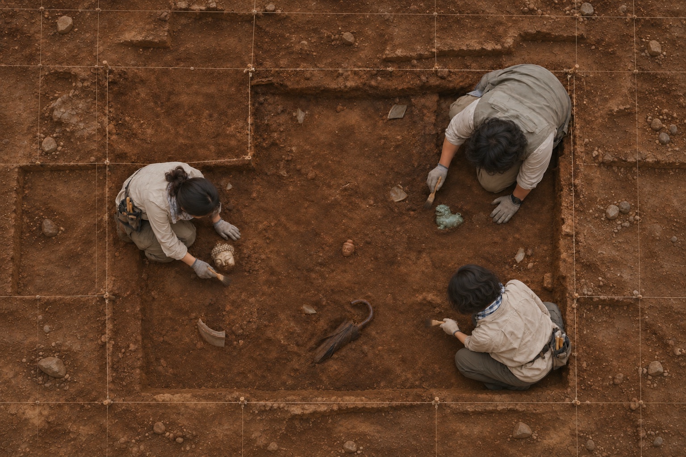

OUR ROOTS
오래된 것에서,
오늘 곁에 둘 물건으로.
흙은 뿌리가 자라는 곳이자, 오랜 시간을 품은 유산이 머무는 곳입니다. 토소는 한국 전통 유물에서 영감을 얻어 일상 속 작은 물건을 만듭니다.
유물의 형태를 다시 바라보고, 오늘의 쓰임을 더합니다.
우리의 뿌리가 당신의 일상에 닿을 수 있도록.
FROM ROOTS TO SMALL GOODS
흙 속에 숨은 작은 빛을 발견해 보세요.

OUR ROOTS
흙은 뿌리가 자라는 곳이자, 오랜 시간을 품은 유산이 머무는 곳입니다. 토소는 한국 전통 유물에서 영감을 얻어 일상 속 작은 물건을 만듭니다.
유물의 형태를 다시 바라보고, 오늘의 쓰임을 더합니다.
우리의 뿌리가 당신의 일상에 닿을 수 있도록.
SMALL GOODS, DEEP ROOTS
유산에서 일상으로 이어지는 토소의 물건.